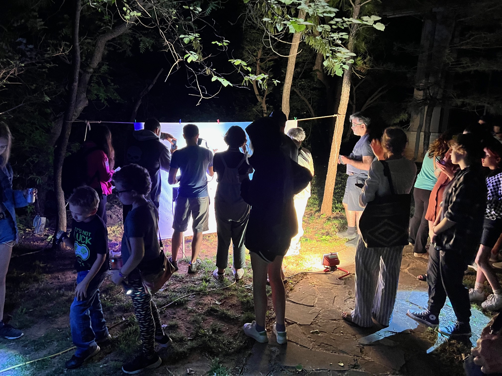
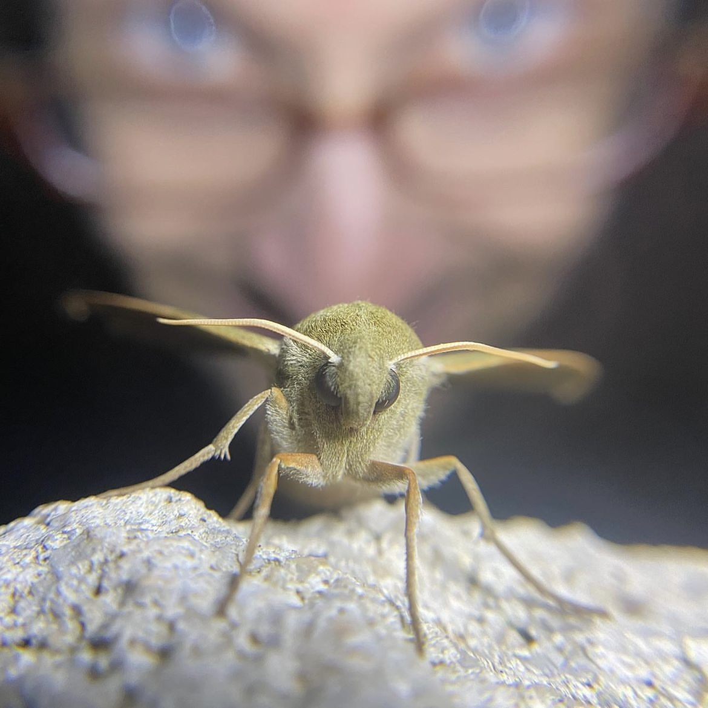
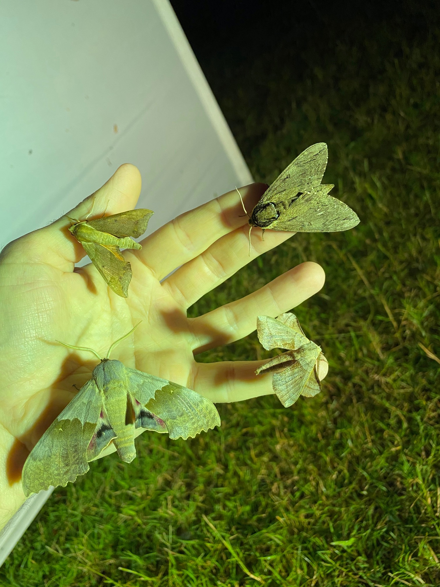

Join us on January 22, 2024 Presentation-Title:“Moths of Oklahoma"

Presented on Zoom by Zach DuFran
Join us on January 22, 2024 Presentation-Title:“Moths of Oklahoma">

Presented on Zoom by Zach DuFran
Join us on January 22, 2024 Presentation-Title:“Moths of Oklahoma"

Presented on Zoom by Zach DuFran
Join us on January 22, 2024 Presentation-Title:“Moths of Oklahoma"

Presented on Zoom by Zach DuFran
Join us on January 22, 2024 Presentation-Title:“Moths of Oklahoma"

Presented on Zoom by Zach DuFran
Next Meeting Monday 1-22-2024 at 7:00pm on Zoom only-Title:“Moths of Oklahoma"
Presented by Zach DuFran
Description: Zach DuFran will present his work surveying moths across the incredibly diverse state of Oklahoma and his efforts to recruit more moth enthusiasts to help with this mission.
Bio: Zach is a naturalist living in central Oklahoma. Zach is a Software Engineer for the National Weather Service by day and enjoys spending as much time outdoors as possible. He is crazy about moths and has been working to expand the knowledge of moth species and distributions in his area. During the warm season he hosts public "Moth Nights" near his home and around the state. He also enjoys birding and tending to his native pollinator garden. He loves traveling to state parks with his wife and two kids on weekends, and much farther abroad during extended vacations.
facebook group
join our large group discussion on facebook

Monarch Emergence Video by Linda Avitt